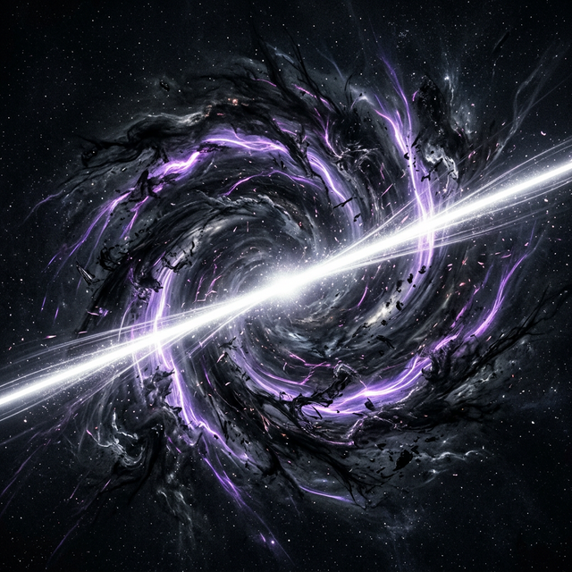
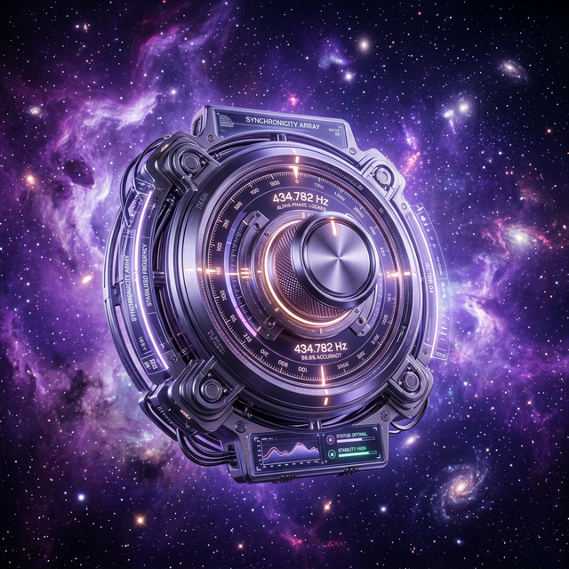
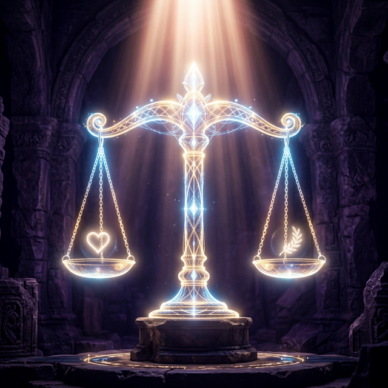

Se você não sabe como é a imagem na tampa da caixa, nunca conseguirá
montar as peças soltas da própria existência. O Cristianismo fornece o cenário completo.
A lógica não é uma invenção; é a estrutura do pensamento correto. A Lei da Não-Contradição dita que
algo não pode ser "A" e "não-A" ao mesmo tempo.
O relativismo moral defende que "toda verdade é subjetiva". Mas usando a Tática do
Papa-Léguas, deixamos o ceticismo bater na própria parede de sua montanha lógica.
Desafio Cético
"A verdade absoluta não existe! Nada é verdade para todos."
Resposta: "Isso que você acabou de dizer... é uma verdade absoluta?" Toda negação da verdade absoluta exige uma verdade absoluta para ser dita. O relativismo se
autodestrói.

Verdade de Correspondência
A verdade é simplesmente "dizer aquilo que é". Ela é descoberta, e não inventada.

1 em 10¹³⁸
Chance Probabilística
Pilar Dois
O Cosmo e o Ajuste Fino
Através do acrônimo SURGE provamos que o universo teve um princípio a partir do nada
(Big Bang / Segunda Lei da Termodinâmica). E tudo que teve um início exige uma Causa imaterial,
atemporal e inimaginavelmente poderosa.
As constantes da física, do Big Bang ao nosso Sol, operam em um Ajuste Fino no limite exato
do "fio de uma navalha".
Desafio Cético
"O Universo sempre existiu, ou estamos aqui por absoluto e monumental acaso cego!"
Resposta: A Segunda Lei da Termodinâmica prova que o Universo está
"gastando energia". Se fosse eterno, já estaríamos num caos frio e morto. E quanto ao acaso, a
estatística de haver vida sem Inteligência é de 1 em 10¹³⁸, diz o astrofísico
Fred Hoyle.
Pilar Três
A Vida: O DNA é Código
A biologia é um show de engenharia inesgotável. Sistemas de complexidade irredutível, como o motor
flagelar bacteriano, perdem sua função se você remover uma única de suas vinte peças. Sistemas
parciais não poderiam sobreviver a evolução lenta.
Além disso, a vida requer o elemento de Informação. O DNA age de modo mais
sofisticado que qualquer software da Microsoft, operando com Foresight (Antevidência)
frente a mutações que nem aconteceram ainda.
Desafio Cético
"Mutações aleatórias copiadoras dadas em tempo infinito e sem cérebro geraram o código genético!"
Resposta (O Cálculo de Borel): Leis naturais criam padrões simples (como
cristais de sal), mas não geram mensagens complexas e específicas. Letras aleatórias
lançadas aos bilhões formam apenas lixo. Códigos exigem Codificadores.
ATCG GATC TACG CGAT > Init.Sequence() > Origin: Intelligently Designed

Dor (Megafone)
Virtude (Amor)
Pilar Quatro
A Lei Moral e a Dor
Você não sabe que uma linha está "torta" a não ser que tenha o padrão de uma "linha reta" na mente.
Sem um Deus que defina a essência do Bem imposto no universo, o mal que causou o escravismo seria
"apenas uma preferência evolucionária local".
Por que, então, há dor? Porque Deus deu o prêmio maior: o Livre-Arbítrio. Pois um
mundo de autômatos perfeitos jamais seria capaz de amar.
Desafio Cético
"Se tanta injustiça, morte e sofrimento desgraça existe, então isso prova que um Deus Bom não
existe no tribunal!"
Resposta: Como dizia C.S. Lewis, "Sem dor, não tem valor". A dor é o
megafone que nos desperta. Forja em nós coragem, perseverança e compaixão num teste de escola. E
mais: o Criador não se calou, Ele também sofreu na cruz por nós (A Encarnação), para quitar a
conta moral.
Pilar Cinco
O Túmulo Vazio no Tribunal da História
O Novo Testamento tem assombrosos 15.000 pergaminhos copiados superando a
Ilíada de Homero de longe. Se rejeitar o rigor da Bíblia historicamente, será preciso cancelar a
história da Era Clássica Ocidental inteira por falta de evidência.
Teoria do Desmaio
"Jesus não morreu realmente. Acordou no túmulo."
Julgamento: Totalmente impossível. Uma lança romana lhe perfurou o pulmão e o
saco pericárdio (JAMA comprovou água e sangue). Ele estava sangrando, sem asfixia e não poderia
convencer ninguém arrastado para fora de duas toneladas de pedra de que era o Filho da
Vida.
Teoria do Roubo
"Os discípulos covardemente roubaram o corpo pra ganhar status."
Julgamento: "O Teste do Sangue". Pessoas podem até morrer por uma fé cega
achando que é a verdade. Mas, doze homens pescadores não dariam a jugular voluntariamente às
espadas e a cruz de ponta-cabeça, sabendo que tudo era deliberadamente uma mentira deles velada.
Alucinação Coletiva
"Toda gente endoidou subitamente por grief (luto psicólogico)."
Julgamento: 500 testemunhas não alucinam juntas fisicamente e interagem por 40
dias no deserto e na praia, além do túmulo permanecer incrivelmente vazio e vigiado.
Quiz O Teste da Cosmovisão
Descubra se a sua lente para ler o mundo faz ponte ou contradiz as evidências mais puras do cosmos e do
coração humano.